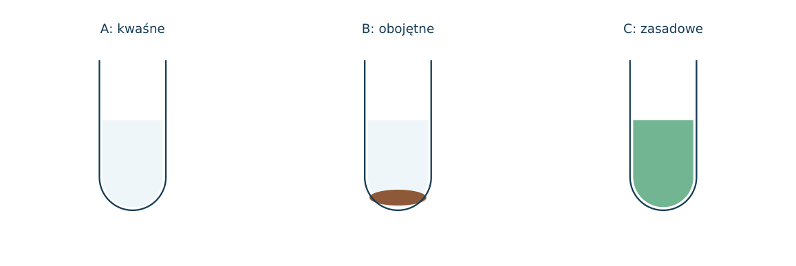
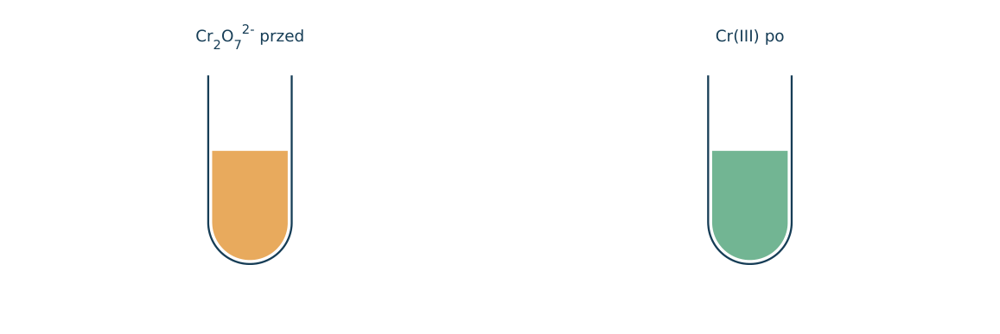
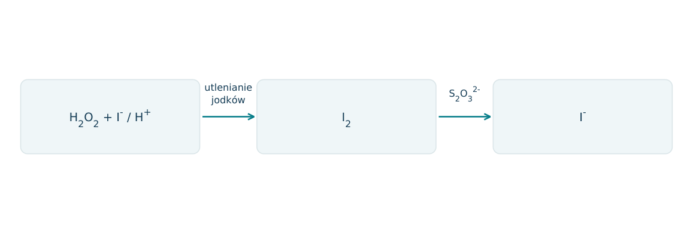
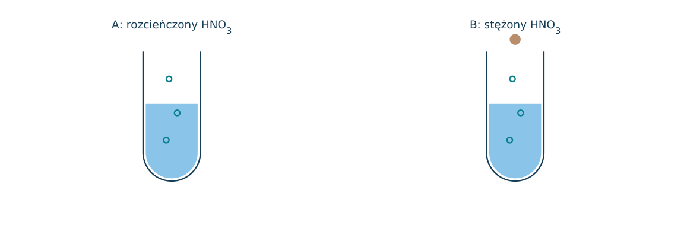
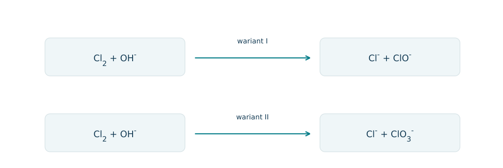
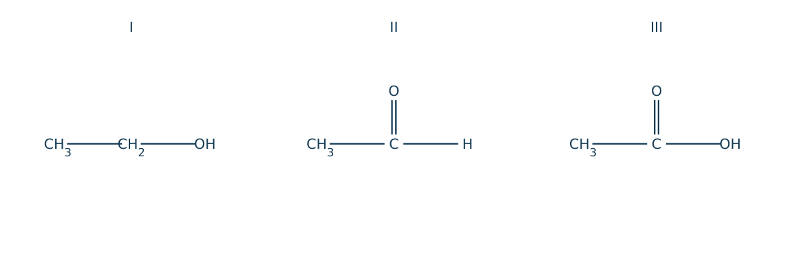
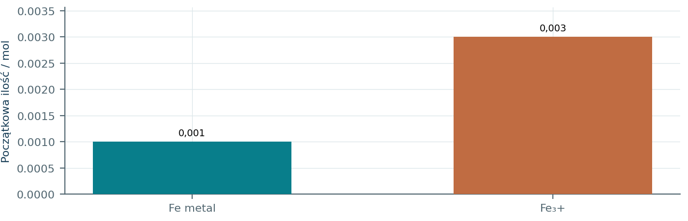
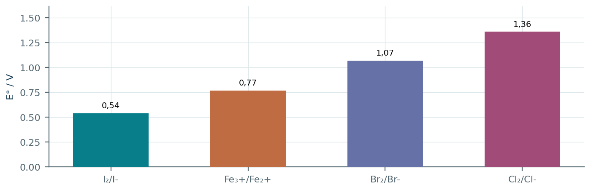
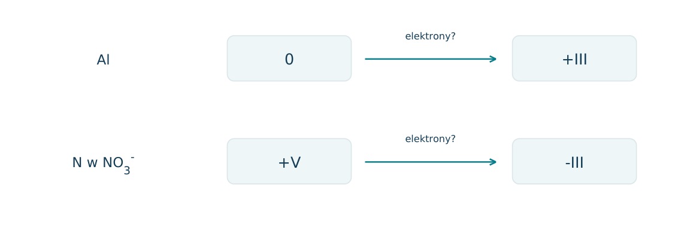
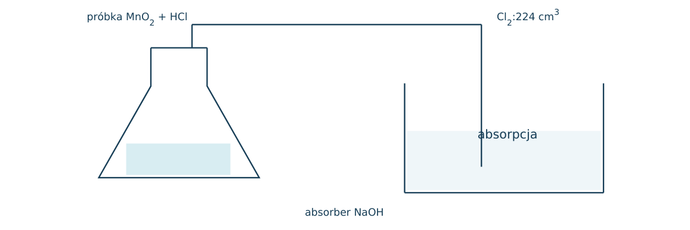

10.01 · 1 pkt
Oblicz stopień utlenienia Mn w KMnO4.
Rozwiązanie
- +VII
50 zadań · 113 pkt · odpowiedzi rozwijane po samodzielnej próbie
← KatalogZadania PDFRozwiązania PDFDane do obliczeń: H 1; C 12; N 14; O 16; Na 23; Mg 24; Al 27; P 31; S 32; Cl 35,5; K 39; Ca 40; Cr 52; Mn 55; Fe 56; Cu 64; Zn 65; Ag 108; Br 80; I 127; Ba 137 (g/mol). NA = 6,02·1023 mol-1. Vm = 22,4 dm3/mol w warunkach normalnych (0°C, 1013 hPa). W 25°C Kw = 10-14. Dane podane w zadaniu mają pierwszeństwo.
Oblicz stopień utlenienia Mn w KMnO4.
Oceń zdania A i B, wpisując P albo F. Każde zdanie fałszywe popraw lub krótko uzasadnij. A: Utleniacz przyjmuje elektrony. B: Utleniacz sam ulega utlenianiu.
Oblicz stopień utlenienia O w H2O2.
Oblicz stopień utlenienia H w NaH.
Oblicz stopień utlenienia N w NH4+.
Oblicz stopień utlenienia N w NO3-.
Oblicz stopień utlenienia Fe w Fe3O4.
W reakcji Zn + Cu2+ → Zn2+ + Cu wskaż utleniacz i reduktor.
Wyjaśnij różnicę między utleniaczem a procesem utleniania.
Napisz półreakcje dla 2Fe2+ + Cl2 → 2Fe3+ + 2Cl-.
Czy HCl + NaOH → NaCl + H2O jest redoksem? Uzasadnij.
Dlaczego H2O2 może być utleniaczem i reduktorem? Odwołaj się do stopnia utlenienia O.
Zbilansuj reakcję: MnO4- z Fe2+ w środowisku kwasowym. Pokaż bilans elektronowy i podaj równanie we wskazanej postaci (jonowej dla jonów, cząsteczkowej dla pozostałych).
Zbilansuj reakcję: Cr2O72- z Fe2+ w środowisku kwasowym. Pokaż bilans elektronowy i podaj równanie we wskazanej postaci (jonowej dla jonów, cząsteczkowej dla pozostałych).
Zbilansuj reakcję: MnO4- z SO32- do MnO2 w środowisku obojętnym lub słabo zasadowym. Pokaż bilans elektronowy i podaj równanie we wskazanej postaci (jonowej dla jonów, cząsteczkowej dla pozostałych).
Zbilansuj reakcję: MnO4- z H2O2 w środowisku kwasowym. Pokaż bilans elektronowy i podaj równanie we wskazanej postaci (jonowej dla jonów, cząsteczkowej dla pozostałych).
Zbilansuj reakcję: Cl2 z I-. Pokaż bilans elektronowy i podaj równanie we wskazanej postaci (jonowej dla jonów, cząsteczkowej dla pozostałych).
Zbilansuj reakcję: H2O2 z I- w środowisku kwasowym. Pokaż bilans elektronowy i podaj równanie we wskazanej postaci (jonowej dla jonów, cząsteczkowej dla pozostałych).
Zbilansuj reakcję: Cu ze stężonym HNO3 do NO2. Pokaż bilans elektronowy i podaj równanie we wskazanej postaci (jonowej dla jonów, cząsteczkowej dla pozostałych).
Zbilansuj reakcję: Cu z rozcieńczonym HNO3 do NO. Pokaż bilans elektronowy i podaj równanie we wskazanej postaci (jonowej dla jonów, cząsteczkowej dla pozostałych).
Zbilansuj reakcję: MnO2 z HCl do MnCl2 i Cl2. Pokaż bilans elektronowy i podaj równanie we wskazanej postaci (jonowej dla jonów, cząsteczkowej dla pozostałych).
Zbilansuj reakcję: Fe2O3 z CO do Fe i CO2. Pokaż bilans elektronowy i podaj równanie we wskazanej postaci (jonowej dla jonów, cząsteczkowej dla pozostałych).
Zbilansuj dysproporcjonowanie Cl2 z zimnym rozcieńczonym NaOH. Produkty: NaCl, NaClO i H2O. Wskaż oba końcowe stopnie utlenienia chloru.
Zbilansuj rozkład H2O2 i wykaż, że to dysproporcjonowanie.
Zbilansuj synproporcjonowanie Fe i Fe3+ do Fe2+. Wskaż reduktor.
Ile moli Fe2+ utleni 0,020 mola MnO4- w kwasie?
Do miareczkowania Fe2+ w kwasie zużyto 20,0 cm3 KMnO4 0,0200 mol/dm3. Oblicz masę Fe w próbce.
Ile cm3 KMnO4 0,0200 mol/dm3 potrzeba do utlenienia 0,0100 mola H2O2 w kwasie?
0,010 mola Cr2O72- utlenia Fe2+ w kwasie. Oblicz ilość elektronów i Fe2+ w molach.
Jakie produkty redukcji MnO4- są typowe w środowisku kwasowym, obojętnym i silnie zasadowym?
Po dodaniu reduktora fioletowy roztwór MnO4- stał się zielony bez osadu. Podaj prawdopodobny produkt i środowisko.
Uczeń zbilansował atomy w MnO4-+Fe2++H+→Mn2++Fe3++H2O, ale nie sprawdził ładunku. Jaką sumę ładunków musi dawać poprawny zapis 1:5:8 po lewej i 1:5:4 po prawej?
Oblicz formalny stopień utlenienia C w CH4, CH3OH i CO2.
Porównaj stopnie utlenienia karbonylowego C w CH3CHO i karboksylowego C w CH3COOH. Określ rodzaj przemiany.
Potencjały standardowe: Cu2+/Cu +0,34 V; Ag+/Ag +0,80 V. Czy Cu utleni się pod działaniem Ag+? Podaj równanie.
Dane: Fe3+/Fe2+ +0,77 V; I2/I- +0,54 V. Który jon redukuje Fe3+: I- czy Fe2+? Wskaż reakcję z jodkiem.
W 0,10 mola Fe3O4 znajdują się Fe(II) i Fe(III) w stosunku 1:2. Ile moli elektronów potrzeba do redukcji całego Fe do metalu?
Do 25,0 cm3 Fe2+ zużyto 15,0 cm3 0,0200 mol/dm3 MnO4- w kwasie. Oblicz c(Fe2+) i wyjaśnij, dlaczego barwa titranta może wskazywać koniec miareczkowania.
Czy zastąpienie H2SO4 przez HCl zawsze jest obojętne dla miareczkowania silnym utleniaczem? Wyjaśnij, odwołując się do chlorków.
Próbka 0,500 g zawiera Fe2+ i obojętną domieszkę. W kwasie zużyła 25,0 cm3 KMnO4 0,0200 mol/dm3. a) Zapisz obie półreakcje. b) Zapisz równanie jonowe sumaryczne. c) Oblicz masę Fe. d) Oblicz procent masowy Fe i wskaż przyczynę zbyt wysokiego wyniku przy obecności innego reduktora.
Każdy numer 41-50 oznacza jedno zadanie główne; podpunkty są oceniane osobno.
Do trzech porcji MnO4- dodano reduktor. A było zakwaszone, B obojętne, C silnie zasadowe. Rysunek pokazuje wynik: prawie bezbarwny roztwór, brunatny osad i zielony roztwór. W C powstał MnO42-.

10.41.1 (2 pkt) Podaj produkty Mn w A-C i liczby elektronów przyjętych przez jeden atom Mn.
10.41.2 (1 pkt) Zapisz półreakcję redukcji MnO4- w A.
10.41.3 (1 pkt) Dlaczego ta sama ilość MnO4- nie zawsze utleni tę samą ilość Fe2+?
A: Mn2+,5e-; B: MnO2,3e-; C: MnO42-,1e-.
MnO4-+8H++5e-→Mn2++4H2O.
Liczba przyjmowanych elektronów zależy od produktu redukcji i środowiska, więc zmienia się stosunek stechiometryczny.
Próbka 0,500 g zawiera Fe2+ i obojętną domieszkę. W kwasie zużyła 20,0 cm3 K2Cr2O7 0,0200 mol/dm3. Schemat pokazuje przejście barwy dichromianu(VI) do roztworu Cr(III); pomiń inne reduktory.

10.42.1 (2 pkt) Zbilansuj jonowe równanie reakcji z Fe2+.
10.42.2 (2 pkt) Oblicz masę Fe i jego procent w próbce.
10.42.3 (1 pkt) Czy obecność dodatkowego reduktora podwyższy czy obniży wynik przypisany Fe?
Cr2O72-+6Fe2++14H+→2Cr3++6Fe3++7H2O.
n dichromianu=0,000400 mol; nFe=0,00240 mol; mFe=0,1344 g, udział 26,88%.
Podwyższy, bo dodatkowe zużycie titranta zostanie mylnie przypisane Fe2+.
1,00 g roztworu H2O2 rozcieńczono do 100,0 cm3. Z 20,0 cm3 w kwasie i nadmiarze I- wydzielono I 2, zużywając do niego 4,00 cm3 S2O32- 0,100 mol/dm3. Informacja: I 2+2S2O32-→2I-+S4O62-.

10.43.1 (1 pkt) Napisz równanie utleniania I- przez H2O2 w kwasie.
10.43.2 (2 pkt) Oblicz n(H2O2) w odmierzonej porcji i w całej próbce.
10.43.3 (2 pkt) Oblicz procent masowy H2O2 w pierwotnym roztworze.
H2O2+2I-+2H+→I 2+2H2O.
n tiosiarczanu=0,000400 mol; nI2=nH2O2=0,000200 mol; w całości 0,00100 mol.
m=0,00100·34=0,0340 g; cp=3,40%.
Dwie próbki Cu po 1,92 g reagowały z nadmiarem HNO3. W próbie A rozcieńczony kwas dawał bezbarwny NO, który brunatniał w powietrzu. W B stężony kwas dawał od razu brunatny NO2. To projekty doświadczeń do analizy na papierze.

10.44.1 (2 pkt) Zapisz oba równania cząsteczkowe.
10.44.2 (1 pkt) Oblicz n gazu w każdej próbie przed utlenieniem NO przez powietrze.
10.44.3 (1 pkt) Wyjaśnij brunatnienie gazu A równaniem i stopniami utlenienia N.
3Cu+8HNO3→3Cu(NO3)2+2NO+4H2O; Cu+4HNO3→Cu(NO3)2+2NO2+2H2O.
nCu=1,92/64=0,0300 mol; A: nNO=0,0200, B: nNO2=0,0600 mol.
2NO+O 2→2NO2; N: +II→+IV, tlen utlenia NO.
Chlor w zasadzie może dawać Cl- i ClO- albo Cl- i ClO3-. Schemat pokazuje różne produkty w dwóch zestawach warunków. W obu przypadkach część atomów chloru ulega redukcji, a część utlenieniu.

10.45.1 (2 pkt) Zbilansuj jonowe równania obu wariantów.
10.45.2 (1 pkt) Wskaż stopnie utlenienia chloru w trzech produktach.
10.45.3 (1 pkt) Oblicz, jaka część atomów Cl ulega utlenieniu w wariancie II.
Cl2+2OH-→Cl-+ClO-+H2O; 3Cl2+6OH-→5Cl-+ClO3-+3H2O.
Cl-: -I; ClO-: +I; ClO3-: +V.
1 atom na 6, czyli 1/6≈16,7%; pięć atomów przyjmuje po 1e-, jeden oddaje 5e-.
W ciągu przemian zaznaczono ten sam atom C grupy funkcyjnej: etanol→etanal→kwas octowy. Formalny stopień utlenienia oblicz, przyjmując C-H jako -1 dla C, pojedyncze C-O jako +1 i C=O jako +2.

10.46.1 (2 pkt) Podaj stopnie utlenienia zaznaczonego C w I-III.
10.46.2 (1 pkt) Ile moli elektronów formalnie odda 0,100 mola etanolu utlenionego do kwasu?
10.46.3 (1 pkt) Napisz półreakcję utleniania etanolu do kwasu w środowisku kwasowym.
Etanol: -I; etanal: +I; kwas: +III.
4e- na cząsteczkę, łącznie 0,400 mola elektronów.
C2H5OH+H2O→CH3COOH+4H++4e-.
Do 100,0 cm3 roztworu zawierającego 0,00300 mola Fe3+ wprowadzono 0,0560 g Fe. Metal rozpuścił się całkowicie, tworząc wyłącznie Fe2+. Pomiń reakcję z wodą, kwasem i tlenem.

10.47.1 (2 pkt) Zapisz równanie jonowe oraz wskaż utleniacz i reduktor.
10.47.2 (1 pkt) Oblicz końcowe ilości Fe2+ i Fe3+.
10.47.3 (1 pkt) Oblicz końcowe stężenia obu jonów przy stałej objętości.
Fe+2Fe3+→3Fe2+; utleniaczFe3+, reduktorFe.
nFe=0,00100; zużycieFe3+=0,00200; końcowoFe2+=0,00300, Fe3+=0,00100 mol.
[Fe2+]=0,0300; [Fe3+]=0,0100 mol/dm3.
Wykres przedstawia potencjały standardowe redukcji. Przyjmij standardowe warunki i brak reakcji ubocznych. W dwóch probówkach zmieszano Fe3+ odpowiednio z I- oraz Br-.

10.48.1 (2 pkt) Rozstrzygnij, w której probówce Fe3+ utleni halogenek, i uzasadnij potencjałami.
10.48.2 (1 pkt) Napisz zachodzące równanie jonowe.
10.48.3 (1 pkt) Czy chlor może utlenić Fe2+? Podaj znak E° odpowiedniej reakcji.
Utleni I-, bo 0,77-0,54=+0,23 V; nie utleni Br- w standardowym kierunku, bo 0,77-1,07<0.
2Fe3++2I-→2Fe2++I 2.
Tak; E°=1,36-0,77=+0,59 V.
W silnej zasadzie Al redukuje NO3- do NH3 i przechodzi w [Al(OH)4]-. Schemat podaje zmiany formalnych stopni utlenienia, ale współczynniki trzeba ustalić. To zastosowanie bilansu elektronowo-jonowego do podanej informacji.

10.49.1 (2 pkt) Wyznacz liczby elektronów oraz najmniejszy stosunek n(Al): n(NO3-).
10.49.2 (2 pkt) Zbilansuj Al+NO3-+OH-+H2O→[Al(OH)4]-+NH3.
10.49.3 (1 pkt) Podaj sposób potwierdzenia zasadowego charakteru powstającego gazu.
Al oddaje 3e-, N przyjmuje 8e-; stosunek 8: 3.
8Al+3NO3-+5OH-+18H2O→8[Al(OH)4]-+3NH3.
Wilgotny czerwony papierek lakmusowy zmienia barwę na niebieską; nie stosuje się bezpośredniego wąchania.
Próbka MnO2 z obojętną domieszką, masa 1,00 g, reagowała z nadmiarem HCl. Powstało 224 cm3 Cl2 w warunkach normalnych. Gaz pochłonięto później w zasadzie według Cl2+2OH-→Cl-+ClO-+H2O.

10.50.1 (2 pkt) Napisz reakcję wydzielania Cl2 i wskaż utleniacz.
10.50.2 (2 pkt) Oblicz czystość próbki, M(MnO2)=87 g/mol.
10.50.3 (1 pkt) Oblicz minimalne n(NaOH) potrzebne do absorpcji gazu.
MnO2+4HCl→MnCl2+Cl2+2H2O; utleniaczMnO2.
nCl2=0,0100 mol=nMnO2; mMnO2=0,870 g; czystość 87,0%.
0,0200 mola NaOH.